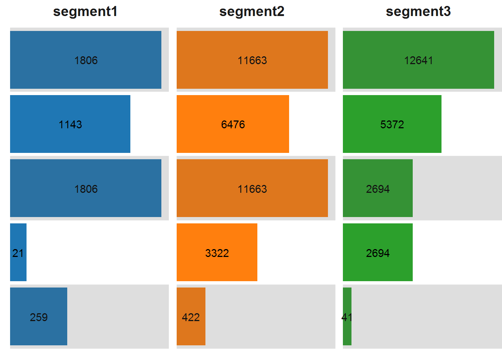
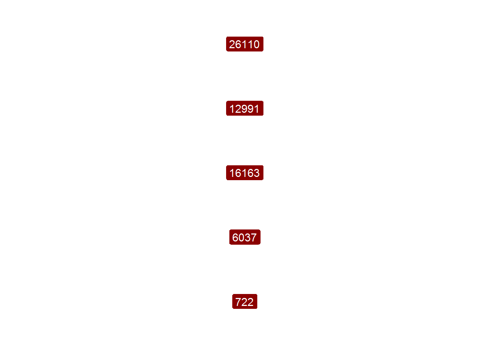
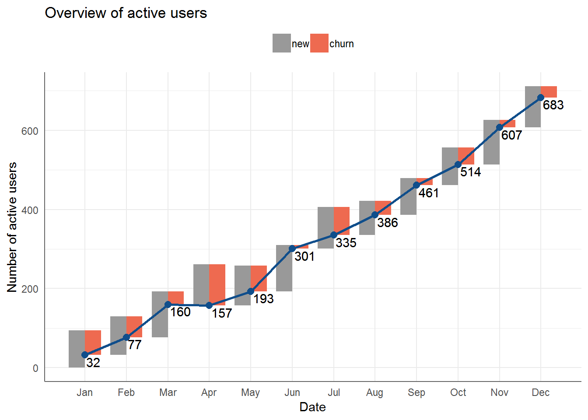
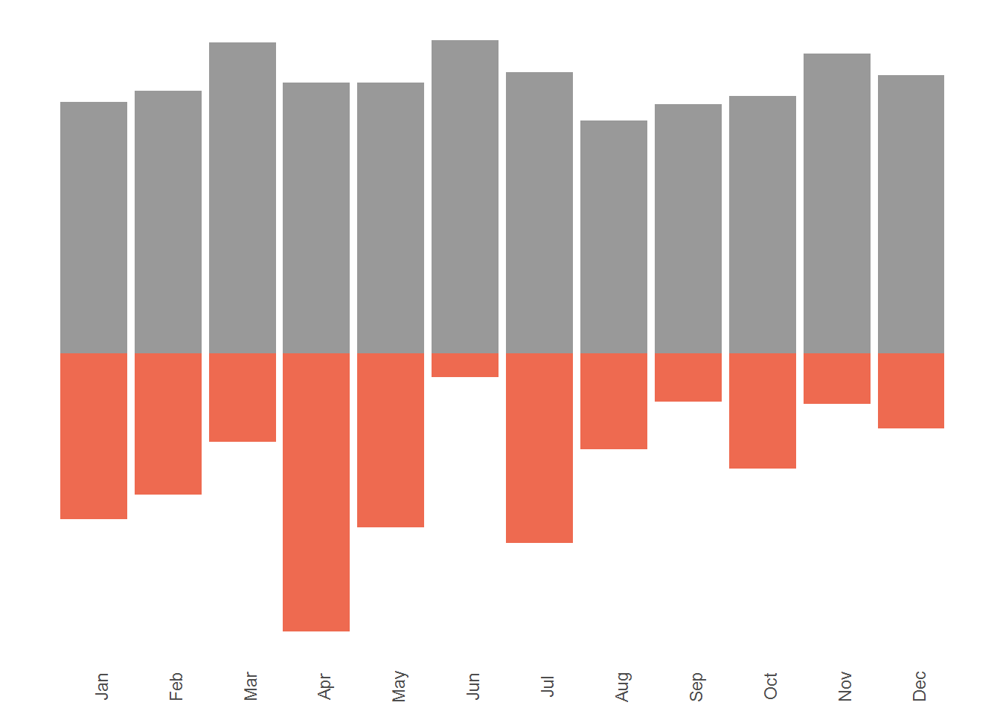
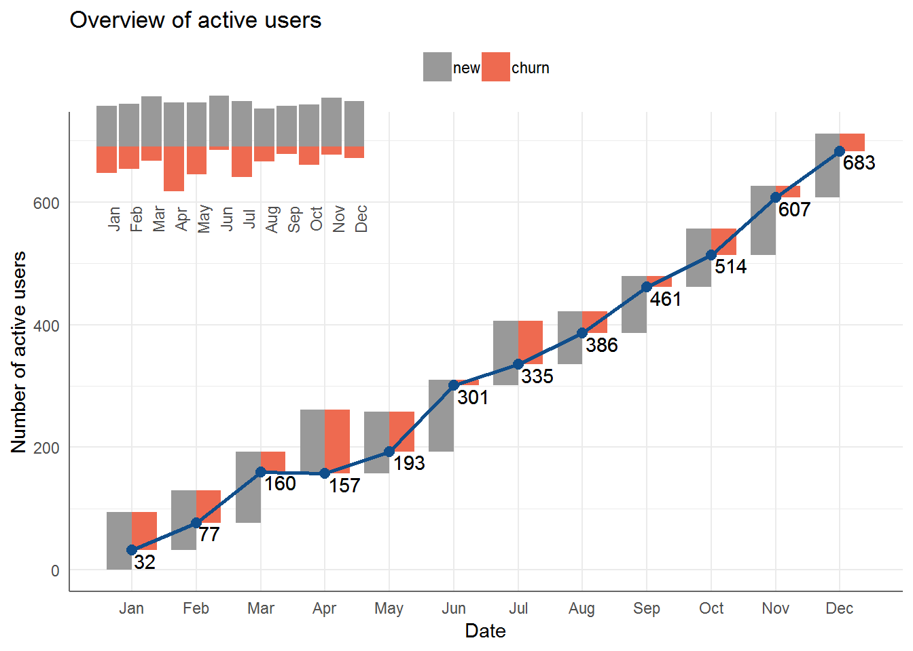

Chương 10 Trực quan hóa dữ liệu
10.1 Xây dựng phễu bán hàng theo từng nhóm
Trong quá trình phân tích bán hàng, phếu bán hàng (sale funnel) là một kỹ thuật rất hữu dụng để trực quan hóa kết quả kinh doanh theo từng nhóm. Tuy nhiên, hiện ít có biểu đồ nào thể hiện được phễu bán hàng một cách hiệu quả trên R.
Trong mục này, tác giả sẽ hướng dẫn một ví dụ thực tiễn trực quan hóa phễu bán hàng một cách hiệu quả.
Xem ví dụ điển hình về phễu bán hàng dưới đây
data <- read.table(textConnection(
c("step;segment1;segment2;segment3;total
1_visit;1806;11663;12641;26110
2_register;1143;6476;5372;12991
3_login;1806;11663;2694;16163
4_subscribe;21;3322;2694;6037
5_paid;259;422;41;722")),
header = T, sep = ";")
# Dữ liệu
data## step segment1 segment2 segment3
## 1 1_visit 1806 11663 12641
## 2 2_register 1143 6476 5372
## 3 3_login 1806 11663 2694
## 4 4_subscribe 21 3322 2694
## 5 5_paid 259 422 41
## total
## 1 26110
## 2 12991
## 3 16163
## 4 6037
## 5 722Trong tập dữ liệu trên, ta sẽ mô phỏng dữ liệu phếu bán hàng của 3 phân khúc khách hàng trên một trang thương mại điện tử mà trong đó, khách hàng sẽ đi qua năm bước khác nhau:
- Ghé thăm website (visit)
- Đăng ký (register)
- Đăng nhập (login)
- Đăng ký cập nhật các thông tin sản phẩm (subscribe)
- Mua hàng và trả tiền thành công (paid)
Để tạo một biểu đồ phễu bán hàng, ta sẽ thực hiện 3 bước lớn sau.
- Tạo
themecho biểu đồ - Tạo các biểu đồ con cho phễu bán hàng
- Kết hợp các biểu đồ để tạo thành phễu bán hàng hoàn chỉnh
# Gọi library
library(tidyverse)
library(reshape2)
library(forcats)
library(ggthemes)
# Tạo theme trông cho chart
funnel_theme <- theme(axis.title = element_blank(),
axis.ticks.x = element_blank(),
axis.text.x = element_blank(),
legend.position = "none",
panel.grid = element_blank()
)
# Phân rã dữ liệu
df <- data %>% melt(id.vars = "step")
# Tạo biểu đồ chính
p1 <- df %>%
mutate(step = fct_rev(step)) %>%
filter(variable != "total") %>%
ggplot(aes(step, value)) +
geom_bar(aes(fill = variable), stat = "identity") +
facet_grid(~variable, scale = "free") +
coord_flip() +
geom_text(aes(label = value),
position = position_stack(vjust = .5)) +
scale_fill_tableau() +
theme_minimal() +
scale_y_sqrt() +
funnel_theme +
theme(plot.margin=grid::unit(c(0,0,0,0), "mm")) +
theme(
axis.text.y = element_blank(),
strip.text = element_text(size = 14,
face = "bold")) +
theme(
panel.spacing = unit(0, "mm")) +
annotate("rect", xmin = 0.5, xmax = 1.5, ymin = 0, ymax = Inf,
alpha = .2) +
annotate("rect", xmin = 2.5, xmax = 3.5, ymin = 0, ymax = Inf,
alpha = .2) +
annotate("rect", xmin = 4.5, xmax = 5.5, ymin = 0, ymax = Inf,
alpha = .2) +
theme(axis.text.y = element_blank())
p1
- Tạo thêm phần
labeltổng theo từng segment
df %>%
mutate(step = fct_rev(step)) %>%
filter(variable == "total") %>%
ggplot(aes(step, 0)) +
geom_label(aes(label = value),
col = "white",
fill = "darkred",
size = 4) +
coord_flip() +
facet_wrap(~variable) +
theme_minimal() +
theme(axis.text = element_blank()) +
funnel_theme +
theme(
strip.text.x = element_blank()
) -> p2
p2
- Tạo thêm thứ tự các bước trong phễu bán hàng để dễ theo dõi hơn
df2 <- data.frame(step = data$step,
value = 1:5)
df2 %>%
mutate(step = fct_rev(step)) %>%
ggplot(aes(step, 1)) +
geom_hline(yintercept = 1) +
geom_point(size = 10, col = "darkgreen") +
geom_text(aes(label = value),
col = "white") +
coord_flip() +
theme_minimal() +
funnel_theme +
theme(
axis.text = element_text(size = 14)
) -> p3
p3- Cuối cùng, ta có thể tạo ghép các biểu đồ rời rạc để tạo thành phễu bán hàng hoàn chỉnh. Việc kết hợp các biểu đồ trên
ggplot2có thể hoàn thành một cách đơn giản vớiggplot2
#devtools::install_github("thomasp85/patchwork")
library(patchwork)
p3 +
labs(title = "Sale funnel for 3 segments") +
p1 + p2 +
plot_layout(nrow = 1, widths = c(1, 8, 1))Như vậy, chúng ta đã hoàn thành phễu bán hàng rất chuyên nghiệp với ggplot2. Phễu bán hàng này đặc biệt hiệu quả khi cùng lúc phải so sánh nhiều phân khúc khách hàng khác nhau trên toàn bộ chuỗi bán hàng.
10.2 Vẽ biểu đồ warterfall cho acive/inactive users
Trong kỷ nguyên số, chỉ số active user (tạm dịch: người dùng thường xuyên hoạt động) là chỉ số đặc biệt quan trọng với bất kỳ website/ app nào. Công thức tính chỉ số người dùng thường xuyên hoạt động tại khoảng thời gian t được tính như sau:
\[active_{t} = active_{t-1} + new_{t} - churn_{t}\]
Ví dụ về waterfall chart được lấy từ ví dụ của Tableau tại đường link: [https://public.tableau.com/views/CH24_BBOD_ChurnTurnover/SubscriberChurnAnalysis]
Trong case study này, chúng ta sẽ tìm cách xây dựng một biểu đồ waterfall chart tương tự
# Load library
library(tidyverse)
library(ggplot2)
library(reshape2)
library(lubridate)
library(grid)
library(gridExtra)
# Tạo dữ liệu giả lập
set.seed(123)
data <- data.frame(date = seq(1, 372, by = 31) %>% as_date)
data <- data %>%
mutate(new = abs(rnorm(12, 100, 10)) %>% round(0)) %>%
mutate(churn = abs(rnorm(12, 50, 30)) %>% round(0)) %>%
mutate(net = new - churn) %>%
mutate(eop = cumsum(net)) %>%
select(-net)
data## date new churn eop
## 1 1970-01-02 94 62 32
## 2 1970-02-02 98 53 77
## 3 1970-03-05 116 33 160
## 4 1970-04-05 101 104 157
## 5 1970-05-06 101 65 193
## 6 1970-06-06 117 9 301
## 7 1970-07-07 105 71 335
## 8 1970-08-07 87 36 386
## 9 1970-09-07 93 18 461
## 10 1970-10-08 96 43 514
## 11 1970-11-08 112 19 607
## 12 1970-12-09 104 28 683Trong ví dụ này, dữ liệu được tạo ngẫu nhiên sao cho số lượng active user cuối kỳ (eop - end of period) bằng với số cuối kỳ trước, thêm số lượng mới và trừ đi lượng khách hàng rời bỏ (churn).
Để tạo waterfall chart, ta có thể sử dụng geom_segment trong ggplot2
# Xác định độ rộng của segment
step <- 0.4*(max(data$date) - min(data$date))/(nrow(data) - 1)
# Xác định ymax
data <- data %>%
mutate(ymax = eop + churn)
# Xác định ymin
df <- data %>%
melt(id.vars = c("date", "eop", "ymax")) %>%
mutate(ymin = ymax - value) %>%
rename(group = variable)
# Xác định xmin và xmax
df <- df %>%
mutate(xmin = case_when(
group == "new" ~ date - step,
TRUE ~ date
)) %>%
mutate(xmax = case_when(
group == "new" ~ date,
TRUE ~ date + step
))
# Create waterfall chart
p1 <- df %>%
arrange(date) %>%
ggplot() +
geom_rect(aes(xmin = xmin,
xmax = xmax,
ymin = ymin,
ymax = ymax,
fill = group))
p1Như vậy, ta đã tạo xong biểu đồ water-fall đơn giản. Ở bước tiếp theo, chúng ta cần điều chỉnh lại các thành phần cho biểu đồ.
# Tạo dữ liệu cho biểu đồ đường
df2 <- df %>% select(date, eop) %>% distinct()
# Điều chỉnh theme
p2 <- p1 +
geom_line(aes(date, eop), col = "dodgerblue4", size = 1) +
geom_point(aes(date, eop), col = "dodgerblue4", size = 2.5) +
geom_text(aes(date, eop, label = eop), vjust = 1.2,
hjust = -0.1) +
scale_fill_manual(values = c("grey60", "coral2")) +
theme_minimal() +
theme(
axis.line = element_line(color = "gray40", size = 0.5),
legend.position = "top") +
scale_x_date(breaks = data$date,
date_labels = "%b") +
theme(panel.grid.minor.x = element_blank(),
legend.title = element_blank()) +
ggtitle("Overview of active users") +
xlab("Date") +
ylab("Number of active users")
p2
Bước tiếp theo, ta cần xây dựng biểu đồ bar đơn giản để có thể đưa vào góc phần tư bên trái của biểu đồ vừa tạo.
p3 <- df %>%
mutate(value = case_when(
group == "churn" ~ -1 * value,
TRUE ~ value
)) %>%
ggplot(aes(date, value)) +
geom_bar(aes(fill = group), stat = "identity") +
scale_fill_manual(values = c("grey60", "coral2")) +
theme_minimal() +
theme(
legend.position = "none",
axis.title.x = element_blank(),
axis.title.y = element_blank(),
axis.ticks.y = element_blank(),
axis.text.y = element_blank(),
panel.grid.minor = element_blank(),
panel.grid.major = element_blank(),
axis.text.x = element_text(angle = 90)
) +
scale_x_date(breaks = data$date,
date_labels = "%b")
p3
Cuối cùng, ta có thể nhóm hai biểu đồ trên với grid & gridExtra.
grid.newpage()
# Xác định vị trí cho biểu đồ chính
position_1 <- viewport(width = 1, height = 1,
x = 0.5, y = 0.5)
# Vị trí cho biểu đồ phụ
position_2 <- viewport(width = 0.35, height = 0.25,
x = 0.25, y = 0.75)
print(p2, vp = position_1)
print(p3, vp = position_2)